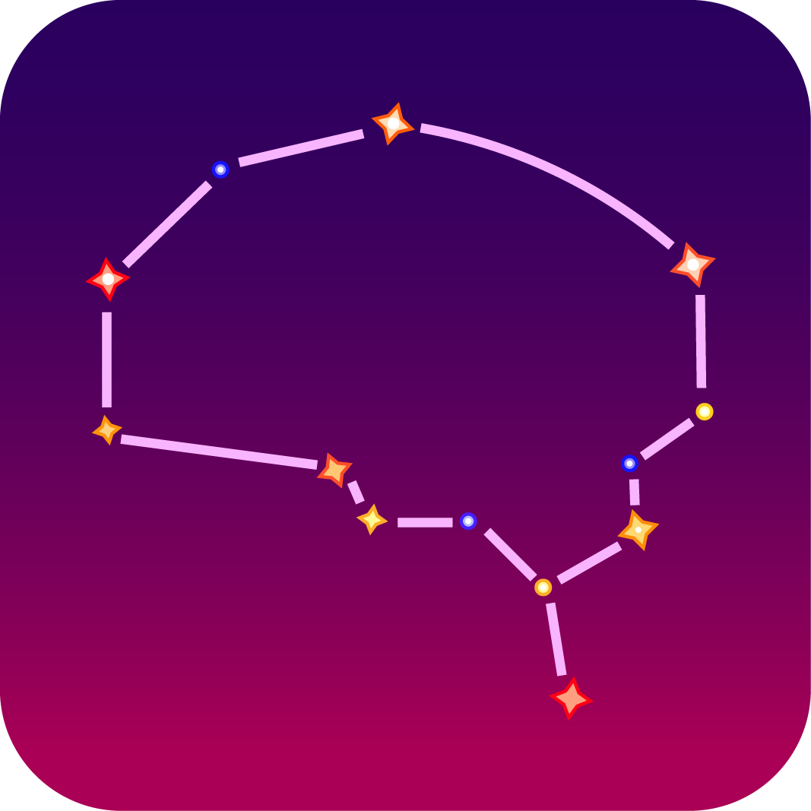
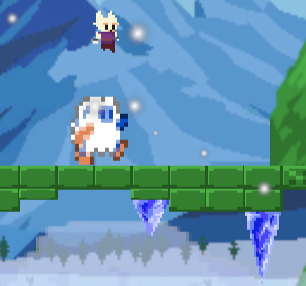
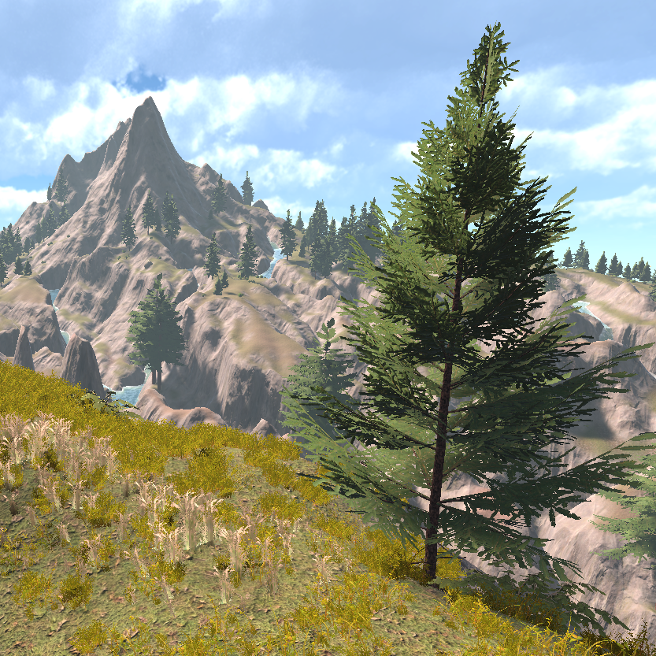
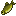

Lucas Slunt
I am a fourth-year Computer Science student at the University of British Columbia’s Okanagan campus.
I'm minoring in visual arts, and currently interning within UBCs Faculty of Medicine, where I work
on a wide range of projects and technical innovations.
I love problem-solving and keeping data organized. Outside of work, I enjoy spending time outdoors,
hitting the gym, and trying
different apples.
Below is a selection of some of my favorite creative projects. While some were completed as part of my coursework, many were personal initiatives intended to deepen my understanding of complex topics or simply for the fun of building something new.
Below is a selection of some of my favorite creative projects. While some were completed as part of my coursework, many were personal initiatives intended to deepen my understanding of complex topics or simply for the fun of building something new.

Apples I have Eaten
A collection of all the apples I have eaten. Updated regularily when I try new varieties!

Hello, Stars!
First-place winner of the 2025 Girls in Tech "Hack Attack 2.0" Hackathon. A Duolingo-style
web app where users can learn about constellations.

ClimATe
2D platformer based on 'Ice Climbers'. Climb to the top of the mountain, while constant
temperature shifts cause enemies and obstacles to change behaviour.

Virtual World
A large, semi-realistic 3D mountainous terrain filled with rivers, foliage, and mysterious
structures. Explored via a first person character controller.

Arkus's Fishing
A modification to the game Minecraft that improves the underwhelming fishing gameplay. The
mod adds new items, recipes, and mechanics.